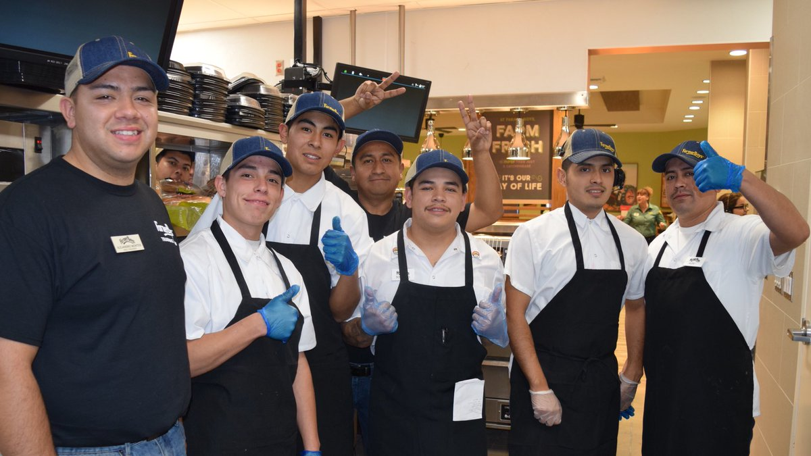
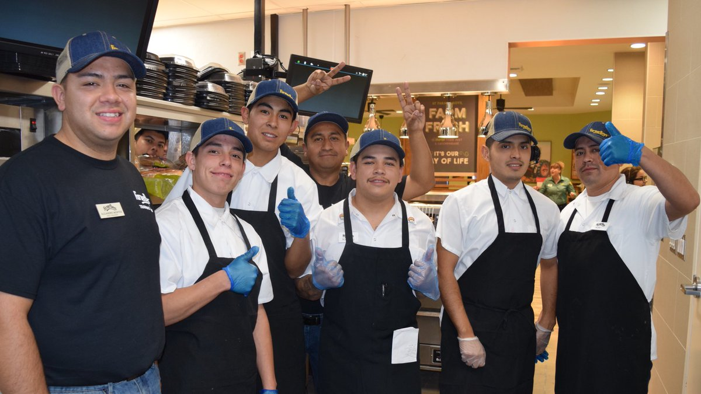

David ONeil
I am currently working at a Juice It Up! As a general manager. I am in charge of organizing the shifts for the week to meet the requests of our employees. I also do the inventory at least once every 2 weeks to ensure we have sufficient inventory for the following weeks to come. Besides managing my team, I also ensure the customers' complaints are handled and taken care of. I assist in making the orders and handing them out in a timely manner as well as managing everyone and ensuring they are on time and doing their part in a timely manner. I am also responsible for closing out the registers at the end of the day and that all money is accounted for correctly. I am also in charge of supervising the employees to make sure they are working efficiently and to the best of their abilities. I create daily tasks for the employees to work on as well to ensure they are cleaning the store and that it is being disinfected every day. Apart from that I do my best to handle school work and organize myself accordingly to ensure I am on top of my responsibilities.
I have prior experience working at Farmer Boys and handling orders in the register as well as through the drive through. I worked as a server and would meet an average of 65 customers a day to meet their demands and inquiries about their orders. I would also be in charge of any takeout orders coming out or online orders received. I was also responsible for any food preparation that needed to be done as well as making sure the tables were clean and the floors mopped and swept. I would go around and also ensure that the restaurant itself was clean and tidy before continuing my other tasks. Following this, I had to ensure that all my tasks for the day were completed in a timely manner and were put to good use. Farmer Boys was a very fast paced environment that helped me acquire great customer service skills and time management skills that I can easily use in my next roles.
Following this, I also acquired a finance internship role for CircleK in which I was responsible for helping support the finance department and help them meet all their demands. Additionally, I was focused on learning all aspects of CircleK and their positions and internal and external activities. I used Microsoft Excel and Microsoft Word to report the results of projects to our departmental director and HR. This was a very face paced environment that exposed me to many challenges and people that were able to help me grow in my speaking and finance skills overall. This internship has opened the door to help me learn at a face paced while also being able to manage my other responsibilities and duties and build a well rounded presentations to present to a group of people and have them listen to what I have.
Experience
General Manger
• Developed shifts for employees
• Ordered and managed inventories for the week
• Managed Customer Complaints
Server
• Responsible for assiting in customer inquiries
• Ensured the store was clean and food was prepped
Finance Intern
• Leaned the internal and external aspects of the company
• Built presentations to presnet to the head department and HR
• Worked side by side with professionals to meet their demands
• Adapted to a face paced enviroment to understand the financal side of Circle K
Education
UC Riverside
University of California Riverside
Portfolio


